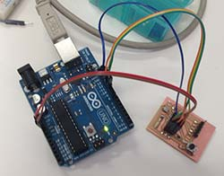
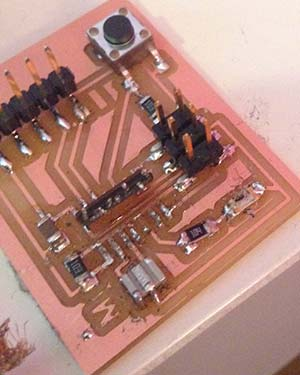
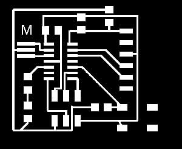

7 - Embedded Programming
Intro
The assignment of this week was to read and understand the datasheet of a microcontroller, to program the FabISP and the echoBoard using different techniques.
Reading the ATTiny 44/a datasheet
When you use an electronic component it is very useful to read the datasheet. It contains many information about the characteristics of the components, especially the power requirements (helpful to don't damage the component) and the pinout (useful to correctly connect the component). Moreover the datasheet tell us the behaviour of the component and, if necessary, the configuration parameters (that could be software or hardware). A microcontroller is a complex component so the datasheet is very rich of information. The ATTiny datasheet can be found here.
The pinout scheme was very useful to design the circuit of the echoBoard to add the button and the led but also to check the connections and the alimentation. Moreover was also useful to understand the role of the fuses and to know how big could be the program that I can upload into it. Indeed using Arduino IDE means to have a bigger program as it imports libraries (and the bootloader), so sometimes is necessary to optimize the code or writing it in C.
Programming the Echo Board
I started using the FabISP to program the Echo Board, however I received many errors, the most common was "target not responding". So to reduce the possible causes of error i used a commercial programmer "usbasp" . It gave me the same error so I checked the board for electrical problems.
After several attempts of flashing the board I realized that the problem was caused by several short circuits. Indeed a trace underneath the microcontroller was too close to the pads and, after soldering there was unwanted junctions. I wasn't able to fix it eve rith the desoldering wire. So I designed another version of the board with more space between pads and traces adding an extra 0 ohm resisto as a jumper.

Above the first version of the board. Below the second version. You can download the scheme and the board file for Eagle

After milling and soldering again the board I was able to program it using the Arduino IDE and the usbasp. The ArduinoIDEwas already configured as I already changed the boards.txt. At the beginning i burnt the bootloader using the Arduino IDE. However it doesn't really load the bootloader but just set the fuses. Then I wrote a simple sketch based on the button example(in the Arduino IDE you call the programs "sketches") to turn on the led when I press the button. The pin where the button is connected is recognized by Arduino software as pin 3. The pin where the led is connected is recognized by Arduino software as pin 8. For this is useful to check the pinout of the Attiny 44a:

Here is the code:
const int buttonPin = 3; // the number of the pushbutton pin
const int ledPin = 8; // the number of the LED pin
// variables will change:
int buttonState = 0; // variable for reading the pushbutton status
void setup() {
// initialize the LED pin as an output:
pinMode(ledPin, OUTPUT);
// initialize the pushbutton pin as an input:
pinMode(buttonPin, INPUT);
}
void loop() {
// read the state of the pushbutton value:
buttonState = digitalRead(buttonPin);
// check if the pushbutton is pressed.
// if it is, the buttonState is HIGH:
if (buttonState == HIGH) {
// turn LED on:
digitalWrite(ledPin, HIGH);
}
else {
// turn LED off:
digitalWrite(ledPin, LOW);
}
}
Here is a video of the working board:
Hello Board from Massimiliano Dibitonto on Vimeo.
Using the FabISP as a programmer
To use the FabISP i removed the two jumpers as reported in this very useful tutorial then I gave power to the Echo Board through the FTDI connector. Af first I tried to upload a sketch using the Arduino IDE (1.5.8)selecting the ATTIny board and UsbTiny as a programmer.But I received an error because the ArduinoIDE was not able to recognize the FabISP as an USBtiny.To make the Arduino IDE recognize the FabISP as programmer I put a programmer.txt file in the hardware folder inside the Arduino sketches folder putting the following parameters found on this forum
fabisp.name=FabISP
fabisp.communication=usb
fabisp.protocol=usbtiny
fabisp.program.protocol=stk500v1
fabisp.program.tool=avrdude
However while uploading the Arduino IDE says that the parameter 'program.params.verbose' is missing. I cannot find any suggestion on forums so I’ll keep trying changing the parameters in the programmers.txt file.
After several attempts I decided to delete the programmers.txt file and try again to select USBTinyISP as programmer, I chose the command "Upload with a programmer" from the File menu and it worked fine:) I found out that the problem was in the usb connector. Pressing it with my finger made the board work fine. So I resolder it to make it more stable. I used it to program the echoBoard with the button sketch as done above with the USBasp.
 Attribution, non-commercial, share alike.
Attribution, non-commercial, share alike.